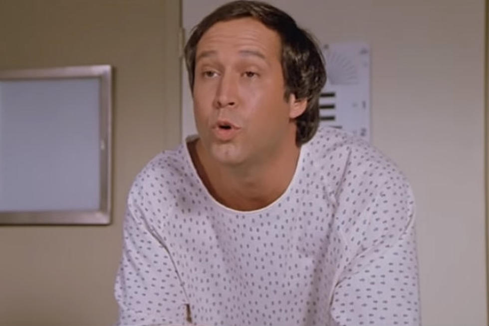

<h1>Mirror, mirror on the wall, who’s the best Blender Render of them all?<h1>

    <body>
        <a href="testside.html" alt="Test Side by Side">
        </a>
        <strong>Developer 1</strong>
        <h3>Weighing in at 31 impressive publications,</h3>
        <h3>He's 6'5" or 6'9" with an Afro,</h3>
        <h3>Titled a Doctor of Philosophy in Geochemistry from Virginia Tech,
        <h3>With an impressive Post Doc at the Lawrence Berkeley National Laboratory,</h3>
        <h3>And his favorite song is Moon River,</h3>
        <h3>Give it up for Dr. Adam F. "Fletch" Wallace!</h3>
        <a href="AFW.html" alt="AFW Samples">
            
        </a>

        <h2>Developer 2</h2>
        <h3>Weighing in at 0 publications,</h3>
        <h3>He's 5'10' but wishes to be 6 feet tall,</h3>
        <h3>Titled a Bacherlor of Science from the Harvard of Idaho: Boise State University,
        <h3>With an unmatched desire to waste time,</h3>
        <h3>And his favorite song is WHAT</h3>
        <h3>Give it up for Tyler D. Schmidt!</h3>
        <a href="TDS.html" alt="TDS Samples">
            
        </a>
    </body>
